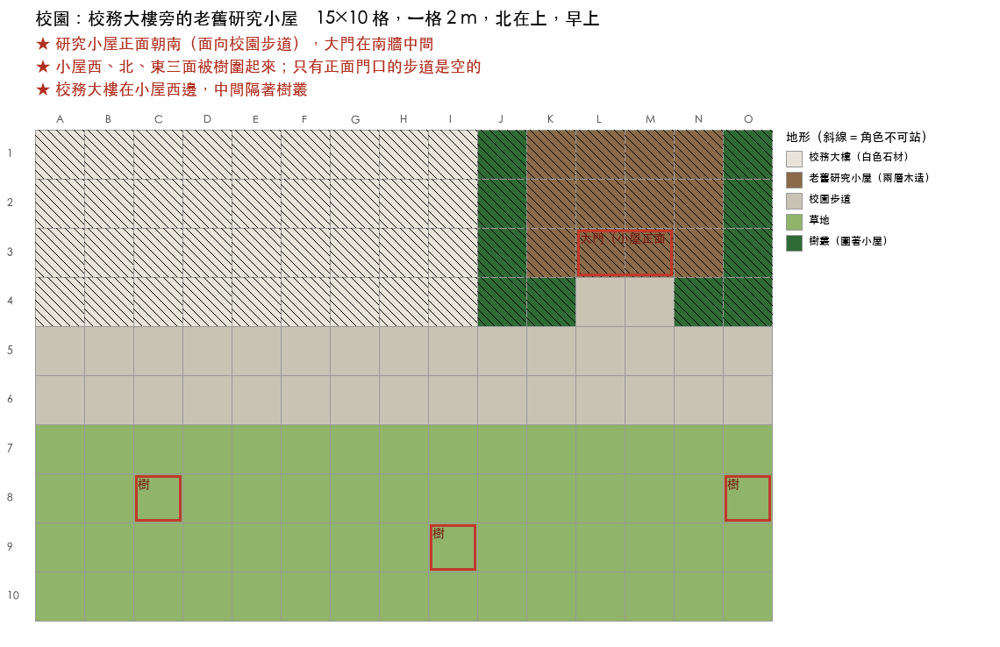
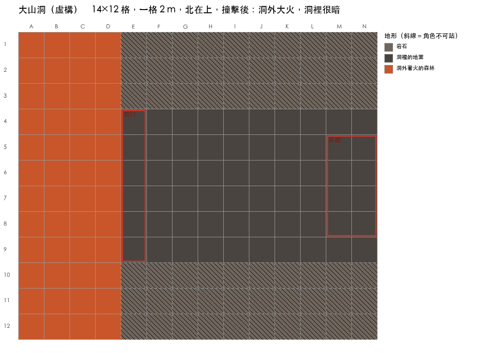

EP2 拍攝清單（切格＋分幕＋地圖）
第 10 步（拍攝清單＋旁白，定稿點）、第 11 步（分幕）、第 12 步（場景地圖）的檢查點。來源：episodes/002_chicxulub/script_v4.md、episodes/002_chicxulub/scenes_v2.json。綠底＝科普格、黃底＝搞笑格。地圖是 Claude 初稿，你可以用地圖編輯器改。畫面上都不能有字（Flow 規定）。
總覽
131 格・17 幕・約 14.4 分鐘 科普格佔 68%（用秒數算；故事頁用字數算是 52%）
| 幕 | 地點 | 格數 | 秒 | 科普 | 地圖 |
|---|---|---|---|---|---|
| 幕 1 | 燃燒的森林・撞擊後（冷開場） | 5 | 16 | 23% | ep2_escape |
| 幕 2 | HERO 的房間・早上 | 1 | 11 | 0% | home_morning |
| 幕 3 | 學校餐廳・中午 | 3 | 19 | 0% | ep2_cafeteria |
| 幕 4 | 校園・博士的小屋外 | 1 | 3 | 0% | campus_hut |
| 幕 5 | 博士實驗室・出發前 | 10 | 59 | 27% | lab |
| 幕 6 | 降落空地・撞擊前（三天後） | 7 | 47 | 58% | arrive |
| 幕 7 | 高處土丘・下午 | 8 | 43 | 49% | ep2_lookout |
| 幕 8 | 高處土丘・下午偏晚（白天的月亮） | 10 | 86 | 74% | ep2_lookout |
| 幕 9 | 高處土丘・撞擊 | 8 | 41 | 82% | ep2_lookout |
| 幕 10 | 撞擊點（插圖） | 11 | 92 | 100% | — |
| 幕 11 | 降落空地・撞擊後：生存指南 | 12 | 70 | 89% | arrive |
| 幕 12 | 降落空地・撞擊後約十分鐘：地震 | 5 | 32 | 16% | arrive |
| 幕 13 | 燃燒的森林・撞擊後十五到二十分鐘起 | 13 | 74 | 85% | ep2_escape |
| 幕 14 | 大山洞・撞擊後約兩個半小時 | 9 | 40 | 27% | ep2_cave |
| 幕 15 | 你沒看到的後來 | 16 | 131 | 90% | — |
| 幕 16 | 六千六百萬年後：怎麼找到它的 | 7 | 71 | 100% | — |
| 幕 17 | 博士實驗室・回來後＋預告 | 5 | 25 | 0% | lab |
段落的地點和環境音
| 段落 | 地點 | 環境音 |
|---|---|---|
| 段落 0 冷開場 🔥 | 燃燒的森林小路（白堊紀，撞擊後約十五分鐘起；跟段落 11 同一個時間，冷開場先放） | 大火劈啪聲、小玻璃珠落下的咻咻聲、遠處恐龍叫 |
| 段落 1 背包 😄 | HERO 的房間（早上）→ 學校餐廳（中午）→ 校園、博士的研究小屋外 → 博士實驗室 | 房間：安靜、窗外遠處車聲；餐廳：人聲吵雜、餐盤碰撞；校園：風、遠處學生說話；實驗室：機器低低的嗡嗡聲 |
| 段落 2 行前教育（縮短）😄 | 博士實驗室（同一天下午） | 機器低低的嗡嗡聲、牆上時鐘滴答 |
| 段落 3 回到白堊紀，找石頭敘舊 😄 | 降落空地（白堊紀，EP1 那片空地，三天後的下午） | 森林鳥叫、蟲鳴、風吹葉子 |
| 段落 4 高處：阿拉莫龍、矮暴龍打三角龍 😄 | 空地附近的高處土丘（下午） | 高處的風聲、遠處恐龍低沉的叫聲 |
| 段落 5 等待：白天的月亮上的坑 😄 | 高處土丘（下午偏晚，藍天上有白天的月亮）；中間是手繪插圖 | 蟲鳴、微風；插圖格沒有環境音 |
| 段落 6 它來了 😬 | 高處土丘（黃昏 → 那顆星越來越亮 → 撞擊）；中間一格手繪插圖 | 黃昏蟲鳴，越來越大的低沉嗡聲蓋過去，撞擊那一刻全靜 |
| 段落 7 地平線那一邊：撞擊的十分鐘 🔥 | 撞擊點（全部手繪插圖，HERO 不在場，不用地圖） | 沒有環境音，每格只有插圖音效 |
| 段落 8 翻開生存指南 😬 | 降落空地（夜裡，南方天邊發亮）；指南內頁特寫 | 夜晚蟲鳴突然停了，遠方低低的隆隆聲 |
| 段落 9 關我屁事 → 背包 😄 | 降落空地（夜裡，南方天邊發亮） | 遠方低低的隆隆聲 |
| 段落 10 追石頭 🔥😄 | 降落空地（撞擊後約十分鐘）→ 森林小路（追石頭） | 地鳴、樹枝搖晃、鳥群驚飛 |
| 段落 11 逃難 🔥 | 燃燒的森林小路（撞擊後約十五分鐘起，天空發光橘紅） | 大火劈啪聲、小玻璃珠落下的咻咻聲、恐龍逃跑的腳步和叫聲 |
| 段落 12 山洞 😬→😄 | 大山洞（撞擊後約兩個半小時；洞口外是大火，洞裡越深越黑） | 洞外：大火；洞裡：回音、水滴聲 |
| 段落 13 你沒看到的後來 😬 | 手繪插圖為主；S13-13 今天的地獄溪荒地，S13-15 博物館 | 插圖格沒有環境音；荒地：風；博物館：安靜的室內、遠處腳步 |
| 段落 14 六千六百萬年後：怎麼找到它的 😄 | 手繪插圖＋實驗室黑板特寫 | 沒有環境音，每格只有插圖音效 |
| 段落 15 回家、賴帳 😄 | 博士實驗室（回來後） | 機器低低的嗡嗡聲、牆上時鐘滴答 |
| 段落 16 預告 | 冰原（下一集預告） | 冷風呼嘯 |
地圖總覽（第 12 步）
這一集用到的地圖。ep2_ 開頭的是 EP2 新畫的（Claude 初稿，你可以改）；其他沿用 EP1。






幕 1 燃燒的森林・撞擊後（冷開場）
地圖：ep2_escape（沿用 v1 幕 1）
| 格 | 畫面 | 類型 | 景別 | 旁白 | 聲音 | 分類 | 知識點 | 看得到的細節 | 秒 |
|---|---|---|---|---|---|---|---|---|---|
| S00-1 | 冒火的森林裡，HERO 拚命往前跑，前面是亂跑的石頭（甲龍）（v2 S00-1） | 🖼 | 背後跟拍、遠景 | 此時此刻，你正在跑。 | 反應：HERO 喘氣；環境：火燒劈啪聲 | 劇情 | 天空發光的橘紅；小玻璃珠透明、不發紅；HERO 沒背背包、戴自己的帽子、脖子掛相機；石頭（甲龍）在前面跑 | 2 | |
| S00-2 | 石頭的尾錘上勾著 HERO 的背包，一甩一甩（v2 S00-2） | 🔍 | 特寫 | 而你前面那隻甲龍，正帶著你的背包。 | 音效：尾錘甩動的呼呼聲 | 搞笑 | 背包背帶勾在甲龍尾錘上；背後是燒起來的森林 | 3 | |
| S00-3 | 天空熱得發紅，小玻璃珠一顆顆落下，樹林一處處燒起來，旁邊還有其他恐龍在逃（v2 S00-3） | 🖼 | 高角度、大遠景 | 至於天上掉下來的，是一顆顆小玻璃珠。 | 音效：小珠子落地的咻咻聲；環境：大火 | 科普 | #69 | 小玻璃珠透明、像細雨落下、不發紅不冒煙；發光的是整片高空；鴨嘴龍等恐龍在逃 | 4 |
| S00-4 | HERO 跳過一根冒火的倒木，畫面定格、變灰（v2 S00-4） | 🖼 | 迎面、近景、定格 | 這時候你一定很想問： 我只是回來拿個背包， 怎麼會變成這樣？ | 音效：唱片刮擦，然後全靜 | 劇情 | HERO 沒背背包、戴帽子、脖子掛相機；倒木冒火；定格變灰 | 6 | |
| S00-5 | 畫面快速倒帶，轉成黑畫面（v2 S00-5） | 🖼 | 倒帶效果 | — | 音效：倒帶聲 | 劇情 | 剪輯效果（倒帶轉黑），不畫圖 | 2 |
幕 2 HERO 的房間・早上
地圖：home_morning（沿用 v1 幕 2）
| 格 | 畫面 | 類型 | 景別 | 旁白 | 聲音 | 分類 | 知識點 | 看得到的細節 | 秒 |
|---|---|---|---|---|---|---|---|---|---|
| S01-1 | HERO 的書桌：一疊帳單，最上面是 EP1 博士給的收據（畫著壞掉的相機，沒有字）（v2 S01-1） | 🔍 | 俯拍特寫 | 先把時間倒回去一點。你的書桌上，帳單又多了幾張。 帳單旁邊，還有一張博士給的收據，上面畫著一台壞掉的相機。 | 音效：紙張沙沙聲 | 搞笑 | 早上陽光從百葉窗照進來；帳單一疊、收據上只畫一台壞掉的相機；畫面上沒有任何字 | 11 |
幕 3 學校餐廳・中午
地圖：ep2_cafeteria（沿用 v1 幕 3；S01-3 是 EP1 閃回）
| 格 | 畫面 | 類型 | 景別 | 旁白 | 聲音 | 分類 | 知識點 | 看得到的細節 | 秒 |
|---|---|---|---|---|---|---|---|---|---|
| S01-2 | 學校餐廳結帳台前，HERO 拿著餐盤，另一手翻遍口袋（v2 S01-2） | 🖼 | 中景 | 到了中午，你到學校餐廳排隊。 結果輪到你的時候，才發現學生證不見了。 | 環境：餐廳吵雜 | 劇情 | 中午的學校餐廳；HERO 一手端餐盤；沒背背包（背包還在白堊紀） | 7 | |
| S01-3 | EP1 最後的畫面：空地上，背包躺在睡著的石頭旁邊（v2 S01-3） | ⏪ | 遠景（沿用 EP1 12-15） | （停）這時你才想起來，它在你的背包裡。 而你的背包，還躺在三天前的白堊紀。 | 音效：回憶的叮一聲 | 劇情 | 沿用 EP1 最後一張：空地上背包躺在睡著的石頭旁邊 | 8 | |
| S01-4 | 刷卡機亮紅燈（只有紅燈和叉叉圖示），HERO 把餐盤放回去（v2 S01-4） | 🖼 | 近景 | 就這樣，沒了學生證，你連學校餐廳的飯都吃不到。 | 音效：刷卡失敗的嗶嗶聲 | 搞笑 | 刷卡機只有紅燈和叉叉圖示，沒有字；HERO 把餐盤放回去 | 5 |
幕 4 校園・博士的小屋外
地圖：campus_hut（沿用 v1 幕 4）
| 格 | 畫面 | 類型 | 景別 | 旁白 | 聲音 | 分類 | 知識點 | 看得到的細節 | 秒 |
|---|---|---|---|---|---|---|---|---|---|
| S01-5 | 校園裡，校務大樓旁那間老舊的兩層木造小屋；HERO 走向門口（v2 S01-5） | 🖼 | 遠景 | 所以你只好去找博士，想借時光機。 | 環境：校園 | 劇情 | 白天的校園；校務大樓旁的兩層老木造小屋；HERO 空手、沒背背包 | 3 |
幕 5 博士實驗室・出發前
地圖：lab（v1 幕 5 縮短（黑板只剩小行星大小和撞擊位置））
| 格 | 畫面 | 類型 | 景別 | 旁白 | 聲音 | 分類 | 知識點 | 看得到的細節 | 秒 |
|---|---|---|---|---|---|---|---|---|---|
| S01-6 | 實驗室裡，博士一聽，眼睛發亮（v2 S01-6） | 🖼 | 近景 | 博士一聽，眼睛都亮了，說：可以啊，不過你要順便幫我拍一張照片。 | 反應：博士「喔！」 | 劇情 | 實驗室裡；博士眼睛發亮 | 6 | |
| S01-7 | 博士一手把相機塞給 HERO，一手搖手指（v2 S01-7） | 🖼 | 中景 | （停）不拍，就不借。 | 反應：博士「嘖嘖」 | 搞笑 | 博士一手把相機塞給 HERO（從這格起 HERO 都有相機），一手搖手指 | 2 | |
| S02-1 | 博士在黑板上用粉筆畫一顆拖著尾巴的星；HERO 在旁邊滑手機（v2 S02-1） | 🖼 | 中景 | 博士要你拍的，是天上那一顆所謂的「新星」。 | 音效：粉筆聲 | 劇情 | 黑板上粉筆畫一顆拖尾巴的星，沒有字；HERO 在旁邊滑手機，脖子掛相機 | 4 | |
| S02-2 | 黑板：那顆星被畫成一顆坑坑疤疤的大石頭，旁邊一座聖母峰，小行星比山還高（v2 S02-2、S02-3 合併） | 🔍 | 特寫 | 其實呢，它是一顆小行星，叫做 Chicxulub，念作「希克蘇魯伯」。 它大概有十公里寬，比聖母峰還要高。 | 音效：粉筆聲 | 科普 | #9 #101 | 黑板粉筆畫：坑坑疤疤的大石頭比旁邊的聖母峰高；沒有字和數字 | 10 |
| S02-3 | 黑板：北美洲和墨西哥的輪廓，小行星從右上角斜斜地飛向猶加敦半島（v2 S02-4） | 🔍 | 特寫 | 而它會斜斜地，從東北邊衝下來，撞在今天墨西哥的猶加敦半島。 | 音效：粉筆劃一道 | 科普 | #104 #9 | 黑板粉筆畫：北美洲和墨西哥的輪廓，小行星從右上角斜斜飛向猶加敦半島；沒有字 | 6 |
| S02-4 | HERO 頭都沒抬，繼續滑手機（v2 S02-8） | 🖼 | 近景 | 而你，只聽到兩個字：流星。 （停）拍流星，這有什麼難的。 | 音效：手機滑動聲 | 搞笑 | HERO 低頭滑手機，脖子掛相機 | 5 | |
| S02-5 | 博士把生存指南推到 HERO 面前，HERO 隨手塞進一個新袋子（v2 S02-9） | 🖼 | 中景 | 說完，博士又把那本生存指南推了過來。這一次，你倒是有把它塞進袋子裡。 | 音效：書推過桌面 | 劇情 | 生存指南被推過桌面；HERO 把它塞進一個白色超商塑膠袋 | 7 | |
| S02-6 | HERO 把洋芋片、食物和水裝進那個袋子（v2 S02-10） | 🔍 | 俯拍特寫 | 你還帶了洋芋片、食物和水。不過這些不是給你自己的，是要帶給一位老朋友。 | 音效：塑膠袋沙沙聲 | 劇情 | 同一個白色塑膠袋：洋芋片、食物、水 | 7 | |
| S02-7 | 袋子裡只有洋芋片；旁邊浮出指南的一頁：一件外套和一大疊罐頭的圖示（v2 S02-11） | 🔍 | 俯拍特寫 | （停）書上說，想在這次撞擊後活下來，你得帶保暖的衣服，和至少六年份的糧食。 而你，帶了一袋洋芋片。 | 音效：洋芋片沙沙聲 | 搞笑 | #88 | 塑膠袋裡只看到洋芋片；指南那一頁只有外套和一疊罐頭的圖示，沒有字 | 10 |
| S02-8 | 博士拉下拉桿，時光機亮起來，HERO 被吸進隧道（v2 S02-12） | 🖼 | 遠景 | — | 音效：時光機啟動 | 劇情 | 時光機圓環亮起來；博士拉下紅色拉桿；HERO 一手提白色塑膠袋、脖子掛相機，沒背背包 | 2 |
幕 6 降落空地・撞擊前（三天後）
地圖：arrive（v1 幕 6 加棕櫚樹、花樹、尾錘）
| 格 | 畫面 | 類型 | 景別 | 旁白 | 聲音 | 分類 | 知識點 | 看得到的細節 | 秒 |
|---|---|---|---|---|---|---|---|---|---|
| S03-1 | EP1 那片空地：石頭還在原地睡覺，背包就在牠旁邊（v2 S03-1） | 🖼 | 遠景 | 時間，回到三天後的白堊紀，還是同一片空地。 這是白堊紀的最後幾天，也是最有名的那些大恐龍，活著的最後幾天。 | 環境：森林鳥叫 | 科普 | #1 | 下午的陽光；石頭在原地睡覺，背包就在牠旁邊（EP1 留下的） | 11 |
| S03-2 | 空地邊：高高的棕櫚樹，和幾棵開著粉紅花的樹，陽光很暖 | 🖼 | 大遠景、仰角 | 這時候的地球很暖，暖到連北極都長棕櫚樹。 而且這裡，很可能剛好是春天。 | 環境：蟲鳴、風吹葉子 | 科普 | #2 #106 | 高高的棕櫚樹、開粉紅花的樹；陽光很暖 | 7 |
| S03-3 | 石頭趴著打呼，HERO 蹲在旁邊看牠（v2 S03-1 的後半） | 🖼 | 中景 | （停）三天沒見，石頭還是一顆石頭。 | 反應：石頭打呼 | 搞笑 | 石頭趴著打呼；HERO 蹲在旁邊，提著塑膠袋、脖子掛相機 | 4 | |
| S03-4 | HERO 把洋芋片倒給石頭，石頭吃得很開心（v2 S03-2） | 🖼 | 中景 | 你把洋芋片倒給牠，牠吃得很開心。畢竟這是牠這輩子吃到的第二包洋芋片。 | 音效：咔滋咔滋 | 搞笑 | HERO 把洋芋片倒給石頭 | 7 | |
| S03-5 | 石頭邊吃邊甩尾巴，尾錘呼呼地掃過地面 | 🖼 | 中景、低角度 | 牠一開心，尾巴就甩來甩去。 甲龍尾巴上那顆大錘子，就像拆房子用的大鐵球，打架的時候，能把對手砸爛。 | 音效：尾錘呼呼聲 | 科普 | #6 | 尾錘掃過地面、帶起落葉；HERO 在旁邊 | 10 |
| S03-6 | HERO 默默往旁邊退了兩步 | 🖼 | 近景 | （停）你往旁邊退了兩步。 | 反應：HERO 吞口水 | 搞笑 | HERO 往旁邊退開；沒背背包、脖子掛相機 | 3 | |
| S03-7 | HERO 把新袋子塞進背包，把背包放回石頭身邊，只背著相機走開（v2 S03-3） | 🖼 | 中景 | 接著你把背包放在牠旁邊，只帶著相機出發。 反正，拍完就回來拿嘛。 | 音效：拉鍊聲 | 劇情 | HERO 把塑膠袋（裡面有指南、回家按鈕）塞進背包，背包放回石頭身邊；HERO 只帶相機走開，從這格起到 S12-4 都沒背背包 | 6 |
幕 7 高處土丘・下午
地圖：ep2_lookout（v1 幕 7 前半＋阿拉莫龍（⚠ 地點待定））
| 格 | 畫面 | 類型 | 景別 | 旁白 | 聲音 | 分類 | 知識點 | 看得到的細節 | 秒 |
|---|---|---|---|---|---|---|---|---|---|
| S04-1 | HERO 爬上附近一塊比較高的土丘，架好相機（v2 S04-1） | 🖼 | 遠景 | 你爬上附近一塊比較高的地方，架好相機。 | 音效：腳架喀一聲 | 劇情 | 下午；HERO 在土丘上把相機架上腳架；沒背背包 | 4 | |
| S04-2 | 從高處看出去的全景；遠方有一個大山洞（v2 S04-2） | 🖼 | 過肩、大遠景 | 從這裡看出去，整片白堊紀都在眼前。 | 環境：風聲 | 劇情 | 從土丘往外看的全景：平坦的蕨類平原；遠方一個大山洞 | 3 | |
| S04-3 | 遠方一群阿拉莫龍，長脖子伸到樹頂吃葉子 | 🖼 | 大遠景 | 遠遠的，有一群阿拉莫龍，正把脖子伸到樹頂上吃葉子。 那些葉子，離地面差不多有四層樓高。 | 環境：低沉的叫聲 | 科普 | #5 | 遠方一群阿拉莫龍，長脖子伸到樹頂 | 9 |
| S04-4 | HERO 從相機觀景窗看，往後退一步、再退一步 | 🖼 | 中景 | 你想拍一張。往後退一步，再退一步。 | 音效：腳步沙沙 | 搞笑 | HERO 從相機觀景窗看，往後退 | 3 | |
| S04-5 | 相機螢幕：只拍到阿拉莫龍的一條腿和半截肚子 | 🔍 | 特寫（相機螢幕） | （停）還是拍不進一整隻。 | 音效：快門聲 | 搞笑 | 相機螢幕裡只有阿拉莫龍的一條腿和半截肚子 | 3 | |
| S04-6 | 另一邊，一隻矮暴龍繞著一隻三角龍跳，三角龍低頭用角頂（v2 S04-3） | 🖼 | 大遠景 | 另一邊，一隻恐龍正在跟三角龍打架。 | 環境：遠處吼叫 | 劇情 | 遠方矮暴龍繞著三角龍跳，三角龍低頭用角頂；大地色、背深肚淺 | 3 | |
| S04-7 | 矮暴龍近一點：像縮小版的暴龍，腿又細又長（v2 S04-4） | 🖼 | 長焦、中景 | 牠長得像暴龍，卻小了好幾號，腿又細又長。 但牠不是小暴龍，牠叫矮暴龍，是另外一種恐龍。牠只有暴龍的十分之一重，跑得比暴龍快多了。 | 環境：吼叫 | 科普 | #125 #128 | 矮暴龍：像縮小版暴龍、腿細長；三角龍在旁邊（大小照比例圖） | 13 |
| S04-8 | HERO 舉起相機對準牠們，又放下，抬頭看天（v2 S04-5） | 🖼 | 近景 | 你又舉起相機。 （停）不對，博士要的是天上那一顆。 | 反應：HERO「嗯？」 | 搞笑 | HERO 舉起相機又放下，抬頭看天 | 5 |
幕 8 高處土丘・下午偏晚（白天的月亮）
地圖：ep2_lookout（新：同幕 7 地圖，時間稍晚；天上掛著淡白色的白天月亮；S05-3～S05-9 是手繪插圖）
| 格 | 畫面 | 類型 | 景別 | 旁白 | 聲音 | 分類 | 知識點 | 看得到的細節 | 秒 |
|---|---|---|---|---|---|---|---|---|---|
| S05-1 | 下午偏晚，HERO 坐在腳架旁發呆；藍天上掛著一個淡白色的半圓月亮 | 🖼 | 遠景 | 等著等著，太陽偏西了，天上掛著一個淡淡的、白天的月亮。 你閒著沒事，用相機把月亮放大來看。 | 環境：蟲鳴 | 劇情 | 下午偏晚；藍天上一個淡白色的半圓月亮；HERO 坐在腳架旁 | 9 | |
| S05-2 | 相機螢幕上的月亮特寫：一個一個圓坑，有的坑中間有一座小山 | 🔍 | 特寫（相機螢幕） | 月亮上，全是一個一個圓圓的坑，有的坑中間，還有一座小山。 | 音效：相機變焦聲 | 科普 | #23 #25 | 相機螢幕上的月亮：圓坑，有的坑中間有一座小山 | 6 |
| S05-3 | 手繪插圖：伽利略拿著望遠鏡看月亮 | ✏️ | 插圖 | 四百多年前，伽利略用望遠鏡，也看到了這些坑。 | 音效：望遠鏡轉動的喀喀聲 | 科普 | #21 | 手繪插圖（指南內頁同一種畫風）：伽利略拿望遠鏡看月亮；沒有字 | 4 |
| S05-4 | 手繪插圖：月亮上的坑冒著煙，像一座座火山 | ✏️ | 插圖 | 接下來的三百年，大部分的科學家都說：這些坑，是月亮上的火山口。 | 音效：咕嘟冒泡聲 | 科普 | #26 | 手繪插圖：月亮上的坑冒煙，像一座座火山 | 6 |
| S05-5 | 手繪插圖：一位留鬍子的天文學家看著望遠鏡，月坑裡有幾頭牛在吃草 | ✏️ | 插圖 | 也有一位德國天文學家說，他在坑裡面，看到牛在吃月亮上的草。 （停）這一點，大家倒是都不信。 | 音效：牛叫一聲 | 搞笑 | #22 #24 #26 | 手繪插圖：留鬍子的天文學家看望遠鏡，月坑裡幾頭牛在吃草 | 9 |
| S05-6 | 手繪插圖：一個人坐在牢房裡，身邊堆滿書 | ✏️ | 插圖 | 後來，有一個俄國人，叫莫洛佐夫。他坐了二十五年的牢，在牢裡自學了十一種語言。 出獄以後，他開始研究天文。 | 音效：翻書聲 | 科普 | #30 #92 #93 | 手繪插圖：一個人坐在牢房裡，身邊堆滿書 | 10 |
| S05-7 | 手繪插圖：地上幾個炸彈坑，箭頭從不同方向飛來，坑都是圓的 | ✏️ | 插圖 | 他跑去看炸彈炸出來的坑，發現不管炸彈從哪個方向飛來，炸出來的坑，都是圓的。 所以月亮上那些圓圓的坑，很可能是天上的石頭撞出來的。 | 音效：遠處爆炸 | 科普 | #27 #28 #29 | 手繪插圖：地上幾個圓的炸彈坑，箭頭從不同方向飛來 | 13 |
| S05-8 | 手繪插圖：一位戴眼鏡的老教授在書桌前寫字，窗外一顆大石頭往地球掉 | ✏️ | 插圖 | 差不多同一個時候，哈佛大學的一位院長也寫過：只要一顆十六公里大的石頭掉下來，就能毀掉地球上的生命。 | 音效：鋼筆沙沙 | 科普 | #31 | 手繪插圖：戴眼鏡的老教授在書桌前寫字，窗外一顆大石頭往地球掉 | 10 |
| S05-9 | 手繪插圖：一群天文學家搖頭擺手 | ✏️ | 插圖 | 可是當時，大部分的天文學家都覺得，地球不可能被那麼大的石頭撞到。 一直要到第一次世界大戰前後，大家才慢慢相信，這件事真的會發生。 | 音效：一群人的「嘖」 | 科普 | #19 #18 | 手繪插圖：一群天文學家搖頭擺手 | 13 |
| S05-10 | HERO 從相機後面抬頭，天上有一顆比所有星星都亮的光點 | 🖼 | 近景、仰角 | （停）你從相機裡抬起頭。 天上那顆星，又更亮了。 | 音效：低沉的嗡聲 | 劇情 | #32 | 黃昏；天上一顆比所有星星都亮的光點；HERO 從相機後面抬頭 | 5 |
幕 9 高處土丘・撞擊
地圖：ep2_lookout（v1 幕 7 後半；S06-5 是手繪插圖）
| 格 | 畫面 | 類型 | 景別 | 旁白 | 聲音 | 分類 | 知識點 | 看得到的細節 | 秒 |
|---|---|---|---|---|---|---|---|---|---|
| S06-1 | 天上一個比其他星星亮很多的光點（v2 S04-6） | 🖼 | 中景 | 三天前，這顆星跟其他星星沒什麼兩樣。你在逃命的時候，根本沒注意到它。 | 環境：夜晚蟲鳴 | 科普 | #7 | 天色變暗；天上一個比其他星星亮很多的光點 | 7 |
| S06-2 | 天空：那顆星越來越亮，亮過旁邊的月亮（v2 S04-7） | 🖼 | 大遠景 | 可是現在，它越來越亮。比所有的星星亮，比行星亮，比月亮還亮。 | 音效：嗡聲變大 | 科普 | #7 | 那顆星比旁邊的月亮還亮 | 6 |
| S06-3 | HERO 從相機後面抬起頭，皺眉（v2 S04-8） | 🖼 | 近景 | 你開始覺得怪怪的：這顆流星，怎麼這麼亮？ | 反應：HERO「嗯……」 | 劇情 | HERO 從相機後面抬頭，皺眉；腳架和相機在旁邊 | 4 | |
| S06-4 | 天空被照得像白天，那顆星比太陽還亮（v2 S04-9 前半） | 🖼 | 背後、遠景 | 最後，它比太陽還亮。 | 音效：嗡聲 | 科普 | #7 | 整片天空被照得像白天，光的中心就是那顆星 | 2 |
| S06-5 | 手繪插圖：小石子流星在高空燒掉；旁邊一顆大石頭把空氣像水一樣劈開 | ✏️ | 插圖 | 一般的流星，只有小石子那麼大，在天空很高的地方，就被空氣擋下來，燒掉了。 可是這一顆，一秒鐘飛二十公里。對它來說，空氣就像水一樣，根本擋不住。 | 音效：咻—— | 科普 | #35 #36 #37 | 手繪插圖：小石子流星在高空燒掉；大石頭把空氣像水一樣劈開 | 14 |
| S06-6 | 它拖著火尾，幾秒鐘劃過整片天空；HERO 按下快門（v2 S04-9 後半） | 🖼 | 背後、遠景 | 然後，它用幾秒鐘的時間，劃過了整片天空。 你按下了快門。 | 音效：呼嘯、快門聲 | 科普 | #7 #38 | 從 HERO 背後拍，他舉相機對著天空；天上刺眼的光球拖著火尾，整片天空以它為中心照亮；看不到石頭的形狀；地平線比天上暗 | 5 |
| S06-7 | 它消失在南方的地平線，接著天邊一陣亮光（v2 S04-10） | 🖼 | 背後、大遠景 | 欸。 | 音效：全靜 | 劇情 | 光球消失在地平線，接著天邊一陣亮光；HERO 背影 | 0 | |
| S06-8 | HERO 張著嘴，呆住（v2 S04-11） | 🖼 | 近景 | （停）它沒有飛過去。 它撞上了。 | 反應：HERO 倒吸一口氣 | 劇情 | HERO 張著嘴呆住；臉被遠方的亮光照到 | 3 |
幕 10 撞擊點（插圖）
地圖：新：全部手繪插圖，HERO 不在場；S07-7 閃回 S05-2
| 格 | 畫面 | 類型 | 景別 | 旁白 | 聲音 | 分類 | 知識點 | 看得到的細節 | 秒 |
|---|---|---|---|---|---|---|---|---|---|
| S07-1 | 手繪插圖：火球貼著海面衝下來，底下的淺海冒出大片蒸氣 | ✏️ | 插圖 | 在你看不到的地平線那一邊，發生了這些事。 小行星還沒碰到地面，它前面的空氣就被壓得燙到幾千度，把底下那片淺海，烤乾了一大半。 | 音效：轟鳴、蒸氣嘶嘶 | 科普 | #40 | 手繪插圖：火球貼著海面衝下來，淺海冒出大片蒸氣 | 13 |
| S07-2 | 手繪插圖：小行星撞進地面，岩石像液體一樣往外流開 | ✏️ | 插圖 | 接著，它用一秒鐘十六公里的速度，撞進了岩石。 撞得太用力了，石頭不是碎掉，而是像水一樣，流開來。 | 音效：巨響 | 科普 | #41 #42 | 手繪插圖：岩石像液體一樣往外流開 | 9 |
| S07-3 | 小插圖：一顆砲彈掉進游泳池，水往四面濺起 | ✏️ | 插圖 | 就像把一顆砲彈，丟進游泳池。 | 音效：撲通 | 科普 | #43 | 小插圖：砲彈掉進游泳池，水往四面濺起 | 3 |
| S07-4 | 手繪插圖：撞擊點濺起一圈高高的土牆，旁邊畫一架小飛機，土牆比飛機高 | ✏️ | 插圖 | 先是往四面八方，濺起一圈土牆，比飛機飛得還要高。 | 音效：轟隆 | 科普 | #45 | 手繪插圖：一圈土牆比旁邊的小飛機高 | 5 |
| S07-5 | 手繪插圖：中間彈起一根巨大的柱子，旁邊畫一座聖母峰，柱子更高 | ✏️ | 插圖 | 接著，中間又彈起一根柱子，比聖母峰還高。 游泳池裡，這只要幾秒鐘；在這裡，要整整十分鐘。 | 音效：低沉轟鳴 | 科普 | #46 #44 | 手繪插圖：中間彈起的柱子比旁邊的聖母峰高 | 8 |
| S07-6 | 手繪插圖：柱子垮下來，剩下一圈環狀的山 | ✏️ | 插圖 | 幾分鐘後，柱子垮了下來，只剩下一圈環狀的山。 | 音效：崩塌 | 科普 | #47 | 手繪插圖：柱子垮下，剩一圈環狀的山 | 4 |
| S07-7 | 閃回：S05-2 相機螢幕上的月亮坑，坑中間的小山 | ⏪ | 特寫（沿用 S05-2） | （停）就是你剛剛在月亮的坑中間，看到的那座小山。 | 音效：叮 | 科普 | #25 #47 | 沿用 S05-2 的相機螢幕月坑 | 5 |
| S07-8 | 小插圖：一隻手用槌子敲釘子，槌子頭冒出熱氣 | ✏️ | 插圖 | 而且，那裡燙得不得了。 你用槌子敲釘子，敲完摸一下槌子，會是熱的。 | 音效：叮叮叮 | 科普 | #49 #50 | 小插圖：手拿槌子敲釘子，槌子頭冒熱氣 | 6 |
| S07-9 | 手繪插圖：撞擊點冒出一團比太陽還亮的大火球，往外衝 | ✏️ | 插圖 | 這一撞，等於把一座山那麼重的石頭的速度，一瞬間，全部變成熱。 那裡變得比太陽表面還要燙，連空氣都燒成一團大火球，往外衝。 | 音效：爆炸 | 科普 | #48 #51 #52 #53 | 手繪插圖：撞擊點冒出比太陽還亮的大火球往外衝 | 12 |
| S07-10 | 手繪插圖：一圈衝擊波往四面八方推出去，地面的樹全被推倒 | ✏️ | 插圖 | 一道衝擊波，用一小時一千六百公里的速度，往四面八方推出去。 科學家說，地球上勉強能拿來比的，只有氫彈。可是這一撞，比一顆氫彈還要大上好幾千萬倍。 | 音效：衝擊波呼嘯 | 科普 | #54 #55 | 手繪插圖：一圈衝擊波往外推，樹全被推倒 | 15 |
| S07-11 | 手繪插圖：幾塊石頭飛出地球，飛向一顆紅色的火星，更遠處一顆木星和它的小月亮 | ✏️ | 插圖 | 有些石頭，甚至被炸得飛出了地球。 科學家算過，可能有幾千塊，最後掉到了火星上；還有一兩塊，飛得更遠，撞上了木星的月亮。 | 音效：咻—— | 科普 | #66 #67 #68 | 手繪插圖：幾塊石頭飛向紅色的火星，更遠處木星和它的小月亮 | 12 |
幕 11 降落空地・撞擊後：生存指南
地圖：arrive（v1 幕 8 前半＋爆炸範圍圖（從黑板搬來）、地球另一邊、四個「對的」）
| 格 | 畫面 | 類型 | 景別 | 旁白 | 聲音 | 分類 | 知識點 | 看得到的細節 | 秒 |
|---|---|---|---|---|---|---|---|---|---|
| S08-1 | HERO 從土丘衝下來，跑回空地，從背包裡翻出生存指南（v2 S05-1） | 🖼 | 中景 | 這是你這輩子，第一次那麼想看生存指南。 於是你跑回去，從背包裡把它翻出來。 | 音效：翻背包 | 搞笑 | 夜裡、南方天邊發亮；HERO 跑回空地，從地上的背包裡翻出指南；背包在石頭旁邊；腳架留在土丘上（我的推定，故事沒交代） | 7 | |
| S08-2 | 指南翻開的那一頁：一顆拖著火尾的大石頭撞地球，旁邊一隻恐龍的骨頭（v2 S05-2） | 🔍 | 特寫 | 翻開一看，你才知道，這一顆，就是讓恐龍滅絕的那一顆。 | 音效：翻頁 | 科普 | #11 | 指南頁：拖火尾的大石頭撞地球，旁邊恐龍骨頭；沒有字 | 5 |
| S08-3 | 指南的爆炸範圍圖：撞擊點往外一圈一圈，圈圈依序蓋到德州、紐約、阿根廷（書上 p.13，手繪重畫，沒有字；v2 S02-6、S02-7 改成指南內頁） | 🔍 | 特寫 | 指南上畫著一張圖：如果今天撞在同一個地方，德州的人會被炸死，紐約的人會被震聾，連阿根廷的窗戶，都會被震碎。 | 音效：一圈一圈的咚咚聲 | 科普 | #20 #56 | 指南頁：撞擊點往外一圈一圈，蓋到德州、紐約、阿根廷的輪廓；沒有字 | 11 |
| S08-4 | 指南：一個地球，撞擊點在這一邊，另一邊站著一個小人比讚 | 🔍 | 特寫 | 想活下來，最好的位置，是在地球的另一邊。 | 音效：叮 | 科普 | #14 #17 | 指南頁：地球一邊是撞擊點，另一邊一個小人比讚；小人是純白皮膚的火柴人 | 4 |
| S08-5 | 指南內頁：世界地圖。撞擊點骷髏、北美洲火焰、大部分地方雪花、很遠的熱帶島嶼一個太陽和箭頭（沒有字）（v2 S05-3） | 🔍 | 特寫 | 而你在的地方，正畫著一團火。 | 音效：火燒聲 | 科普 | #80 | 指南頁世界地圖：撞擊點骷髏、北美洲火焰、大部分地方雪花、遠方熱帶島嶼一個太陽和箭頭；沒有字 | 3 |
| S08-6 | 指南下一頁：一排圖示，第一個是裂開的地面（v2 S05-5） | 🔍 | 特寫 | 指南上寫著，接下來會發生的事。 第一，地震。 | 音效：地鳴 | 科普 | #57 | 指南頁：一排圖示，第一個是裂開的地面 | 4 |
| S08-7 | 圖示：天上落下小玻璃珠（v2 S05-6） | 🔍 | 特寫 | 第二，天上會掉下小玻璃珠。 | 音效：咻咻聲 | 科普 | #69 | 指南圖示：天上落下小玻璃珠（透明、不發紅） | 3 |
| S08-8 | 圖示：發熱的天空把森林烤成一台烤箱（v2 S05-7） | 🔍 | 特寫 | 第三，它們會把天空烤得像一台開到最強火的烤箱，森林會燒起來。 | 音效：火燒 | 科普 | #71 #72 | 指南圖示：發熱的天空把森林烤成烤箱 | 6 |
| S08-9 | 圖示：聲波（v2 S05-4） | 🔍 | 特寫 | 第四，一聲很大的音爆，不管你在地球的哪裡，都聽得到。 | 音效：低沉轟鳴 | 科普 | #15 | 指南圖示：聲波 | 5 |
| S08-10 | 圖示：水邊打來大浪；旁邊一個躺在海邊乘涼的小人被浪追著跑（v2 S05-8 加內容） | 🔍 | 特寫 | 第五，不要待在水邊，會有大浪。 本來，海是最好的隔熱墊，待在海邊最涼快。可是有大浪，所以很兩難。 | 音效：浪聲 | 科普 | #60 #65 #94 | 指南圖示：大浪；海邊乘涼的小人（純白火柴人）被浪追著跑 | 9 |
| S08-11 | 圖示：一座山和一個山洞，箭頭往深處指（v2 S05-9） | 🔍 | 特寫 | 想活下來，就快去高的地方，找一個山洞，越深越好。 | 音效：叮 | 科普 | #16 #70 | 指南圖示：一座山和一個山洞，箭頭往深處指 | 5 |
| S08-12 | 指南最後一格：一塊大陸、一座山、一個時鐘、一個打勾 | 🔍 | 特寫 | 寫這本指南的科學家說：要活下來，你得在對的大陸、對的地方、對的高度，還有對的時間。 | 音效：叮、叮、叮、叮 | 科普 | #91 | 指南最後一格：大陸、山、時鐘、打勾；沒有字 | 8 |
幕 12 降落空地・撞擊後約十分鐘：地震
地圖：arrive（v1 幕 8 後半＋背包在尾錘上甩）
| 格 | 畫面 | 類型 | 景別 | 旁白 | 聲音 | 分類 | 知識點 | 看得到的細節 | 秒 |
|---|---|---|---|---|---|---|---|---|---|
| S09-1 | HERO 闔上指南，看了看相機裡的照片，聳聳肩（v2 S06-1） | 🖼 | 近景 | 你想了一下。 （停）關我屁事，照片拍到了，可以回家了。 | 反應：HERO「嗯！」 | 搞笑 | 夜裡、南方天邊發亮；HERO 闔上指南，看相機裡的照片 | 5 | |
| S09-2 | HERO 把指南塞回地上的背包，蹲下來要翻按鈕；石頭搶先把頭鑽進背包（v2 S06-2） | 🖼 | 中景 | 於是你把指南塞回背包，正要翻出那顆按鈕。 可是石頭還想吃洋芋片，牠把頭鑽進了你的背包。 | 音效：翻找聲 | 搞笑 | HERO 蹲著把指南塞回地上的背包；石頭把頭鑽進背包 | 9 | |
| S10-1 | 地面開始晃，小石頭在地上跳動（v2 S07-1） | 🖼 | 低角度、中景 | 你在地獄溪。算一算，撞擊後大約十分鐘， 地面開始搖了。 | 音效：地鳴 | 科普 | #137 #57 | 地面晃動、小石頭跳起來；夜裡，南方天邊發亮 | 5 |
| S10-2 | 石頭嚇得跳起來就跑，背包背帶勾在牠的尾錘上，跟著被帶走（v2 S07-2） | 🖼 | 中景 | 石頭嚇了一大跳，轉身就跑。 （停）帶著你的背包。還有，你的回家按鈕。 | 音效：尾錘甩動 | 搞笑 | 石頭轉身跑，背包背帶勾在尾錘上被帶走（背包裡有回家按鈕） | 7 | |
| S10-3 | 背包勾在尾錘上甩來甩去，HERO 伸手想抓又縮回來 | 🖼 | 中景、背後跟拍 | 背包勾在那顆大錘子上，甩來甩去。你想搶回來，又不太敢靠太近。 | 音效：尾錘呼呼聲 | 搞笑 | #6 | 背包勾在尾錘上甩；HERO 沒背背包，伸手又縮回 | 6 |
幕 13 燃燒的森林・撞擊後十五到二十分鐘起
地圖：ep2_escape（v1 幕 9＋地上的鳥；S10-5 是 EP1 閃回）
| 格 | 畫面 | 類型 | 景別 | 旁白 | 聲音 | 分類 | 知識點 | 看得到的細節 | 秒 |
|---|---|---|---|---|---|---|---|---|---|
| S10-4 | HERO 在後面追，石頭在前面（v2 S07-3） | 🖼 | 背後跟拍、中景 | 你只好追上去。 | 反應：HERO 喘氣 | 劇情 | HERO 在後面追，石頭在前面跑，背包在尾錘上 | 1 | |
| S10-5 | EP1 行前教育：博士一手舉大恐龍、一手舉小恐龍（v2 S07-4） | ⏪ | 近景（沿用 EP1 04-06） | 博士上課說過，越大隻的，跑得越慢。 | 音效：回憶的叮一聲 | 科普 | #EP1-5 | 沿用 EP1 04-06：博士一手舉大恐龍、一手舉小恐龍 | 3 |
| S10-6 | HERO 越落越遠，扶著膝蓋喘，石頭在遠處越跑越小（v2 S07-5） | 🖼 | 遠景 | （停）可是你連一隻甲龍都追不上。 | 反應：HERO 大喘 | 搞笑 | HERO 扶著膝蓋喘，石頭在遠處越跑越小 | 4 | |
| S11-1 | 天上開始落下小玻璃珠（落地不發紅、不冒煙），高空一片發光，天空被烤得通紅（v2 S08-1） | 🖼 | 遠景 | 撞擊後大約十五分鐘， 天上，開始下起小玻璃珠。 | 音效：咻咻聲、落地嘶嘶聲 | 科普 | #138 #69 | 天空發光的橘紅；小玻璃珠透明、像細雨落下、不發紅不冒煙；HERO 沒背背包、戴帽子、掛相機 | 4 |
| S11-2 | 樹林一片一片燒起來，天空一片橘紅，HERO 從火堆之間穿過去（v2 S08-2） | 🖼 | 遠景 | 這些小珠子，是被撞上天的岩石，融化以後，在高空又凝固成的。 它們掉回來的時候，在很高很高的地方跟空氣摩擦，一顆一顆發光發熱。 等掉到地上，已經不燙了；可是幾億顆一起在天上發熱，就把整片天空，烤得像一台開到最強火的烤箱。 樹林，就這樣一片一片燒了起來。 不過，是不是全世界的森林都一起燒，科學家到現在還在吵。 | 環境：大火 | 科普 | #69 #70 #71 #72 | 樹林一片片燒起來，天空橘紅；HERO 從火堆之間穿過 | 31 |
| S11-3 | 一群鴨嘴龍從 HERO 旁邊衝過去（v2 S08-3） | 🖼 | 遠景 | 所有的恐龍都在逃。 | 音效：雜亂腳步 | 劇情 | 一群鴨嘴龍從 HERO 旁邊衝過（大小照比例圖） | 2 | |
| S11-4 | 一隻三角龍從火裡衝出來（v2 S08-4） | 🖼 | 中景 | — | 音效：吼叫 | 劇情 | 三角龍從火裡衝出來（大地色） | 2 | |
| S11-5 | 腫頭龍低著頭逃，又一頭撞上一棵樹（v2 S08-5） | 🖼 | 中景 | — | 音效：咚 | 搞笑 | 腫頭龍低頭撞上一棵樹 | 2 | |
| S11-6 | 似鴕龍從 HERO 身邊跑過，嘴裡還叼著 HERO 的帽子（v2 S08-6） | 🖼 | 斜角跟拍、中景 | 喔，那是你的帽子。 | 反應：HERO「欸！」 | 搞笑 | 似鴕龍嘴裡叼著 HERO 在 EP1 被搶走的帽子；HERO 頭上戴著自己現在的帽子（兩頂不同） | 2 | |
| S11-7 | 一隻在地上跑的鳥（翅膀短、腿長）跟在 HERO 腳邊一起逃 | 🖼 | 低角度、中景 | 還有一隻鳥，也跟著你們一起跑。牠不會飛高，平常就住在地上。 樹都燒光了，會活下來的鳥，就是牠們這種，住在地上的鳥。 | 音效：鳥叫、小碎步 | 科普 | #73 | 一隻翅膀短、腿長的鳥在 HERO 腳邊跑 | 11 |
| S11-8 | 路邊一隻鼩鼱一溜煙鑽進地洞（v2 S08-7） | 🖼 | 低角度、特寫 | 大傢伙拚命跑。 小傢伙呢，一鑽就沒事了。 | 音效：咻一聲 | 科普 | #74 | 路邊一隻鼩鼱一溜煙鑽進地洞 | 4 |
| S11-9 | 地洞剖面：鼩鼱縮在洞裡，身上有毛，嘴裡叼著一隻蟲（v2 S08-8） | 🔍 | 剖面、特寫 | 牠吃蟲子，會鑽進洞裡躲熱，身上還有一層毛，之後再冷都不怕。 | 音效：吱吱 | 科普 | #34 | 地洞剖面：鼩鼱有毛、嘴裡叼一隻蟲 | 6 |
| S11-10 | 鼩鼱從洞口探頭，看著 HERO 跑過去（v2 S08-9） | 🔍 | 特寫 | （停）而這個小傢伙，就是你的祖先。 | 音效：吱 | 科普 | #33 | 鼩鼱從洞口探頭，HERO 從遠處跑過 | 4 |
幕 14 大山洞・撞擊後約兩個半小時
地圖：ep2_cave（v1 幕 10＋音爆）
| 格 | 畫面 | 類型 | 景別 | 旁白 | 聲音 | 分類 | 知識點 | 看得到的細節 | 秒 |
|---|---|---|---|---|---|---|---|---|---|
| S12-1 | 石頭亂跑，前面出現一個大山洞，就是 HERO 在高處看到的那一個；已有恐龍往裡走（v2 S09-1） | 🖼 | 遠景 | 石頭一路亂跑，竟然跑到了你在高處看到的那個大山洞。 | 環境：大火 | 劇情 | 天空橘紅、森林在燒；大山洞（跟 S04-2 遠方看到的是同一個）；已有恐龍往洞裡走；背包還在石頭尾錘上 | 5 | |
| S12-2 | 山洞口，所有恐龍和 HERO 同時停住、轉頭看南邊；遠方地平線的空氣在震，樹葉往同一邊倒 | 🖼 | 遠景 | 這時候，南邊的地平線，傳來一陣低低的轟隆聲，連空氣都在震。 是音爆。撞擊後大約兩個半小時，它才終於傳到地獄溪。 | 音效：低沉的轟鳴（次聲般的震動） | 科普 | #15 #139 | 山洞口所有恐龍和 HERO 同時轉頭看同一邊；樹葉、煙往同一邊倒；HERO 沒背背包 | 11 |
| S12-3 | HERO 摀著耳朵，一臉「現在才來？」 | 🖼 | 近景 | （停）聲音在空氣裡，走得最慢。 | 反應：HERO「……」 | 搞笑 | HERO 摀著耳朵、一臉「現在才來？」；沒背背包 | 3 | |
| S12-4 | HERO 追上石頭，一手抓住背包的背帶，停了一下（v2 S09-2） | 🖼 | 近景 | 你終於抓到了背包。本來，你只是想拿回背包而已。 | 反應：HERO 鬆一口氣 | 劇情 | HERO 一手抓住尾錘上背包的背帶 | 5 | |
| S12-5 | HERO 拉著石頭，跟著其他恐龍走進山洞，背後是一整片大火（v2 S09-3） | 🖼 | 背後、中景 | 可是最後，你卻拉著牠，一起走了進去。 | 環境：大火漸遠 | 劇情 | #70 | HERO 拉著石頭走進山洞（背包已經拿回來，背在身上），背後是一整片大火 | 3 |
| S12-6 | 山洞深處黑漆漆，HERO 往裡面看（v2 S09-4） | 🖼 | 背後、遠景 | 這個洞，好深。 （停）深到能通到地心嗎？ | 音效：回音 | 搞笑 | 洞裡越深越黑；HERO 背影、背著背包 | 4 | |
| S12-7 | HERO 摸摸石頭的頭，揮手說再見，按下按鈕（v2 S09-5） | 🖼 | 中景 | 你跟石頭說再見，按下按鈕。 | 音效：按鈕喀 | 劇情 | HERO 摸石頭的頭、揮手，手上拿回家按鈕 | 3 | |
| S12-8 | 按鈕沒反應，HERO 拍它一下（v2 S09-6） | 🔍 | 特寫 | 沒反應。 （停）你只好拍了它一下。 | 音效：啪 | 搞笑 | 按鈕特寫：沒亮；HERO 的手拍下去 | 3 | |
| S12-9 | 隧道打開，HERO 背著背包走進去（v2 S09-7） | 🖼 | 中景 | 這一次，你總算帶著背包回家了。 | 音效：隧道 | 劇情 | 隧道打開；HERO 背著背包走進去；石頭留在洞裡 | 3 |
幕 15 你沒看到的後來
地圖：v1 幕 11 加長；多數是手繪插圖
| 格 | 畫面 | 類型 | 景別 | 旁白 | 聲音 | 分類 | 知識點 | 看得到的細節 | 秒 |
|---|---|---|---|---|---|---|---|---|---|
| S13-1 | 空無一人的白堊紀，天空被火光照得通紅（v2 S10-1 改成先熱） | 🖼 | 大遠景 | 你走了之後，地球是這樣的。 一開始，是熱。 | 環境：風、火 | 科普 | #95 | 空無一人的白堊紀，天空被火光照得通紅 | 4 |
| S13-2 | 手繪插圖：好幾道大浪衝上墨西哥和美國南部的海岸，浪比高樓還高（v2 S10-2） | ✏️ | 插圖 | 不到一個小時，好幾道比高樓還高的大浪，衝上了墨西哥灣的海岸，衝進今天的墨西哥和美國南部。 | 音效：巨浪 | 科普 | #61 #62 | 手繪插圖：大浪比海邊高樓還高，衝上海岸 | 9 |
| S13-3 | 手繪插圖：內陸一條河，一道水牆倒著往上游衝 | ✏️ | 插圖 | 很遠的內陸，地震把河水往上游推，像一道比兩層樓還高的水牆，倒著衝回去。 | 音效：水牆轟隆 | 科普 | #63 | 手繪插圖：內陸河上一道水牆倒著往上游衝 | 7 |
| S13-4 | 手繪插圖：撞擊點地底剖面，一層黃色的硫和一層黑色的石油 | ✏️ | 插圖 | 更倒楣的是，撞擊的地方，底下剛好埋著很多硫，還有很多石油。 | 音效：咕嘟 | 科普 | #75 | 手繪插圖：地底剖面，一層黃色的硫、一層黑色的石油 | 6 |
| S13-5 | 手繪插圖：黃色的雲下著雨，雨滴打在葉子上冒煙 | ✏️ | 插圖 | 硫被炸上天，變成硫酸，接下來好幾年，像酸酸的雨一樣，一直下。 | 音效：雨聲、嘶嘶 | 科普 | #76 | 手繪插圖：黃色的雲下雨，雨滴打在葉子上冒煙 | 6 |
| S13-6 | 手繪插圖：一隻刷子把地球刷成黑色，雲在黑煙底下（v2 S10-3 改） | ✏️ | 插圖 | 石油燒成了厚厚的黑煙，飄到比雲還高的地方，連雨都洗不掉，就像替地球漆上了一層黑漆。 再加上森林燒出來的黑煙，大部分的陽光都被擋住，一擋就是好幾年。 | 音效：刷子刷過 | 科普 | #78 #79 #81 | 手繪插圖：一把刷子把地球刷黑，雲在黑煙底下 | 15 |
| S13-7 | 手繪插圖：地球結霜變暗，溫度計往下掉（v2 S10-4） | ✏️ | 插圖 | 然後，是冷。 地球變得又黑又冷，平均降了快三十度。 | 音效：寒風 | 科普 | #82 | 手繪插圖：地球結霜變暗，溫度計往下掉（沒有數字） | 5 |
| S13-8 | 手繪插圖：熱帶島嶼上的太陽只剩一個小小暗暗的圓；旁邊大地乾裂成沙漠 | ✏️ | 插圖 | 連熱帶的島嶼，都只剩下平常一成的陽光。 天氣冷，水就不太蒸發，雨少了八成，大部分的地方，都乾成了沙漠。 | 音效：乾裂聲 | 科普 | #86 #85 | 手繪插圖：熱帶島嶼上的太陽又小又暗；旁邊大地乾裂 | 10 |
| S13-9 | 手繪插圖：赤道附近一座有山的熱帶島嶼，山上有雲、山腳有河（v2 S10-5 改） | ✏️ | 插圖 | 所以這時候，最好的去處，是靠近赤道、有山的熱帶島嶼，那裡還有一點雨，也還有乾淨的水。 | 音效：小雨 | 科普 | #83 #84 #89 | 手繪插圖：赤道附近有山的熱帶島嶼，山上有雲、山腳有河 | 8 |
| S13-10 | 手繪插圖：河邊的烏龜、鱷魚、魚、蛤蜊、蝸牛 | ✏️ | 插圖 | 最好還待在河邊。河裡有烏龜、鱷魚、魚，還有蛤蜊和蝸牛，可以撐比較久。 | 音效：水流 | 科普 | #87 | 手繪插圖：河邊的烏龜、鱷魚、魚、蛤蜊、蝸牛 | 7 |
| S13-11 | 手繪插圖：一排動物剪影一個個變灰，比浣熊大的哺乳類也變灰，只剩一隻在地上築巢的鳥（v2 S10-6 加內容） | ✏️ | 插圖 | 最後，地球上大概四分之三的生物消失了。 在陸地上，比浣熊還大的哺乳動物，全部死光。 恐龍，只剩下在地上築巢的鳥。 | 音效：一個個熄滅的聲音 | 科普 | #123 #12 #11 #73 | 手繪插圖：動物剪影一個個變灰，比浣熊大的哺乳類也變灰，只剩一隻在地上築巢的鳥 | 11 |
| S13-12 | 手繪插圖：一隻恐龍剪影慢慢變淡，一隻小哺乳類剪影慢慢變大 | ✏️ | 插圖 | 這是地球的生命史上，最重要的一刻：恐龍的時代結束了，哺乳動物的時代，開始了。 | 音效：轉場 | 科普 | #10 | 手繪插圖：恐龍剪影變淡，小哺乳類剪影變大 | 8 |
| S13-13 | 地獄溪今天的荒地，岩壁最上面一條深色的土層（v2 S10-7） | 🖼 | 遠景 | 而這一天留下來的那一層土，今天在地獄溪的石頭最上面，還看得到。 | 環境：風 | 科普 | #122 | 今天的地獄溪荒地；岩壁最上面一條深色的薄土層 | 7 |
| S13-14 | 回到第 4 段：遠方的矮暴龍和三角龍（v2 S10-8） | ⏪ | 大遠景（沿用 S04-6） | 對了，還記得那隻矮暴龍跟三角龍嗎？ | 音效：回憶的叮一聲 | 劇情 | 沿用 S04-6：遠方的矮暴龍和三角龍 | 3 | |
| S13-15 | 博物館裡，一具矮暴龍和三角龍纏在一起的化石；三角龍骨頭上插著一顆牙齒（v2 S10-9） | 🖼 | 遠景→特寫 | 很久很久以後，人們在地獄溪挖到一具化石：一隻矮暴龍和一隻三角龍，纏在一起，埋在同一塊石頭裡。 三角龍身上，還插著一顆矮暴龍的牙齒，所以科學家叫牠們「決鬥恐龍」。 | 環境：博物館 | 科普 | #126 #127 | 博物館：矮暴龍和三角龍纏在一起的化石；三角龍骨頭上插著一顆牙 | 16 |
| S13-16 | 手繪插圖：一隻鼩鼱，旁邊一個大大的叉（v2 S10-10） | ✏️ | 插圖 | （停）對了，書上還說：那時候如果你肚子餓，千萬別吃那種像鼩鼱的小動物。 吃錯一隻，說不定就沒有你了。 | 音效：錯誤音 | 搞笑 | #90 | 手繪插圖：一隻鼩鼱，旁邊一個大叉 | 10 |
幕 16 六千六百萬年後：怎麼找到它的
地圖：新：手繪插圖；S14-4 沿用黑板的撞擊坑畫面
| 格 | 畫面 | 類型 | 景別 | 旁白 | 聲音 | 分類 | 知識點 | 看得到的細節 | 秒 |
|---|---|---|---|---|---|---|---|---|---|
| S14-1 | 手繪插圖：一對父子科學家蹲在岩壁前，指著一條薄薄的土層 | ✏️ | 插圖 | 六千六百萬年後，科學家是怎麼知道這件事的？ 一九八零年，有一對科學家父子，在全世界都找得到的一層薄薄的土裡，發現很多地球上很少見的「銥」。他們說：這是一顆小行星帶來的。 | 音效：敲石頭 | 科普 | #105 #121 | 手繪插圖：父子科學家蹲在岩壁前，指著一條薄薄的土層 | 17 |
| S14-2 | 手繪插圖：一張世界地圖上打著大問號 | ✏️ | 插圖 | 可是，撞出來的坑在哪裡？ | 音效：問號的咚 | 科普 | 手繪插圖：世界地圖上一個大問號 | 2 | |
| S14-3 | 手繪插圖：墨西哥海邊一座找石油的鑽油台，工人看著儀器上一個大圓圈 | ✏️ | 插圖 | 其實早在一九七八年，就有一群在墨西哥找石油的人，先找到它了。 | 音效：鑽油機 | 科普 | #115 | 手繪插圖：墨西哥海邊的鑽油台，工人看著儀器上一個大圓圈 | 6 |
| S14-4 | 黑板：撞擊點畫一個大圓，一半在陸地、一半在海裡，上面蓋著一層厚石頭，邊緣一圈小水井（v2 S02-5，從行前教育搬來） | 🔍 | 特寫 | 它有一百八十公里寬。一半在陸地底下，一半在海底， 還被埋在一公里厚的石頭下面，站在上面根本看不出來。 只有坑的邊緣，排著一圈天然的水井。 | 音效：粉筆聲 | 科普 | #111 #112 #113 #114 | 實驗室黑板粉筆畫：大圓一半在陸地、一半在海裡，上面蓋一層厚石頭，邊緣一圈小水井；沒有字 | 14 |
| S14-5 | 手繪插圖：海上一座鑽井平台，鑽頭往下穿過海底、鑽進一圈環狀的山 | ✏️ | 插圖 | 到了一九九一年，大家才確定，就是它。 二零一六年，科學家在海上鑽井，一路鑽進那圈環狀的山，把石頭拿上來看。 | 音效：鑽頭聲 | 科普 | #115 #117 | 手繪插圖：海上鑽井平台，鑽頭往下鑽進一圈環狀的山 | 10 |
| S14-6 | 手繪插圖：一顆黑黑的小行星，從木星外面的太陽系邊緣飛進來 | ✏️ | 插圖 | 再化驗撞擊留下來的岩石，才知道：這顆小行星，是一種黑黑的「碳質小行星」，原本來自比木星還要遠的地方。 | 音效：咻—— | 科普 | #102 #103 | 手繪插圖：黑黑的小行星從木星外面飛進來 | 10 |
| S14-7 | 手繪插圖：印度一大片火山噴著岩漿 | ✏️ | 插圖 | （停）不過，故事還沒完。 差不多同一個時候，印度也有一場超級大的火山爆發。有些科學家認為，恐龍會滅絕，它也有份。 | 音效：火山轟隆 | 科普 | #124 | 手繪插圖：印度一大片火山噴岩漿 | 11 |
幕 17 博士實驗室・回來後＋預告
地圖：lab（v1 幕 12）
| 格 | 畫面 | 類型 | 景別 | 旁白 | 聲音 | 分類 | 知識點 | 看得到的細節 | 秒 |
|---|---|---|---|---|---|---|---|---|---|
| S15-1 | 實驗室：HERO 把相機交給博士，博士看著照片很高興（v2 S11-1 前半） | 🖼 | 遠景 | 回來以後，你把照片交給博士，博士開心得不得了。 | 反應：博士「喔喔！」 | 劇情 | 實驗室；HERO 背著背包，把相機交給博士（這格之後 HERO 沒有相機） | 5 | |
| S15-2 | HERO 緊緊抱著背包，翻出學生證（v2 S11-1 後半） | 🔍 | 特寫 | 當然，你也翻出了你的學生證。 | 音效：叮 | 劇情 | HERO 抱著背包，從裡面翻出學生證 | 3 | |
| S15-3 | HERO 伸出手，博士搖搖手指（v2 S11-2） | 🖼 | 中景 | 至於錢嘛，博士說，這次不是打工，是借時光機的交換條件，所以，沒有錢。 | 反應：博士「嘖嘖」 | 搞笑 | HERO 伸出手，博士搖手指 | 7 | |
| S15-4 | 博士遞給 HERO 一本書，封面是一座火山和往下的洞（沒有字）（v2 S11-3） | 🖼 | 中景 | 不過，他送你一本書，叫《地心冒險》。 | 音效：書遞過來 | 搞笑 | 博士遞一本書，封面只有一座火山和往下的洞，沒有字 | 3 | |
| S16-1 | 一整片冰原，遠方有長毛的大動物剪影（v2 S12-1） | 🖼 | 大遠景 | 下一集。地球變冷了，冷到整片大陸都是冰。 你要怎麼在冰河時期，活過一個冬天呢？ | 音效：冷風 | 劇情 | 整片冰原，遠方長毛大動物的剪影 | 8 |
道具時間線
| 道具 | 出現 | 中段 | 後段 | 最後 |
|---|---|---|---|---|
| 背包（裡面有學生證） | EP1 留在白堊紀空地、石頭旁邊（S01-3、S03-1） | S03-7 HERO 把塑膠袋塞進去，又放回石頭旁邊 | S08-1 翻出指南、S09-2 塞回去、石頭把頭鑽進去；S10-2 背帶勾在尾錘上被帶走（S00-2、S10-3、S10-4、S12-1 都在尾錘上） | S12-4 抓回來，S12-5 起 HERO 背著；S15-2 翻出學生證 |
| 白色超商塑膠袋 | S02-5 指南塞進去；S02-6 裝洋芋片、食物、水 | S02-8 HERO 提著進時光機；S03-3 提著 | S03-4 洋芋片倒給石頭；S03-7 整袋塞進背包 | 之後都在背包裡，看不到 |
| 生存指南 | S02-5 博士推過來，塞進塑膠袋 | S03-7 隨塑膠袋進背包 | S08-1 從背包翻出來看（S08-2～S08-12 內頁），S09-2 塞回背包 | 之後在背包裡 |
| 回家按鈕 | 在塑膠袋裡（S03-7 進背包） | S10-2 隨背包被石頭帶走 | S12-7 HERO 拿出來按、S12-8 拍一下 | S12-9 回家 |
| 相機 | S01-1 收據上畫著壞掉的舊相機；S01-7 博士給新相機 | S01-7 起 HERO 一直掛在脖子上（段落 0、2、3、10～12 都要有） | S04-1 架上腳架；S05-2、S04-5 螢幕；S06-6 按快門；S09-1 看照片 | S15-1 交給博士，之後沒有 |
| 腳架 | S04-1 在土丘上架起來 | S05-1、S06-3 在 HERO 旁邊 | S08-1 HERO 跑回空地時留在土丘上（我的推定，故事沒交代） | 之後不再出現 |
| HERO 的帽子 | HERO 一直戴著自己現在的帽子 | S11-6 似鴕龍叼的是 EP1 被搶走的舊帽子，跟 HERO 頭上的不是同一頂 | ||
| 手機 | S02-1、S02-4 HERO 滑手機 | 之後沒出現 | ||
| 學生證 | S01-2 不見；S01-3 想起在背包裡 | S15-2 從背包翻出來 | ||
| 餐盤 | S01-2 端著 | S01-4 放回去 | ||
| 帳單、收據 | S01-1 書桌上 | |||
| 《地心冒險》 | S15-4 博士送的書 | 下一集伏筆 |